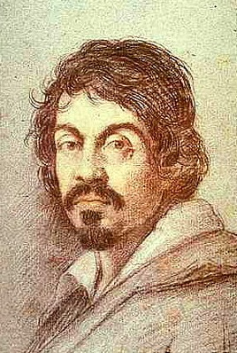

CARAVAGGIO
Michelangelo Merisi da Caravaggio, pintor revolucionario, artista provocador, persona inquieta de caracter pendenciero, genio incomprendido, loco violento, hombre atormentado, que crearía él solo un estilo, el barroco, e influiría (y todavía influye) en todo el arte posterior, de Velázquez al Scorsese de «Malas Calles».
Su vida transcurrió entre la pintura y las peleas, y en las dos artes era extremadamente bueno.
El renacimiento llegaba a su fin y un joven Caravaggio empezó a utilizar técnicas tenebristas, que seguramente se acercaban más a su personalidad oscura. Parece ser que vio el potencial expresivo de las sombras y buscó inspiración en la vida misma, por fea que esta pudiese parecer.
Muy joven todavía, decide irse a Roma, según los biógrafos: «Senza denari e pessimamente vestito», pero la ciudad en plena contrarreforma apreció su estilo teatral frente a la sobriedad protestante y Caravaggio pudo vivir holgadamente practicando la pintura religiosa.
Sus características formas de pintar fueron, como todo lo revolucionario, en principio no entendido y después imitado. En primer lugar renuncia a todo tipo de idealismo, representando a profetas y santos como gente real, sirviéndose de modelos de la calle. La polémica fue enorme: santos como mendigos, vírgenes como prostitutas… Además vestidos con ropas contemporáneas. Pero el pintor capta perfectamente la fuerza psicológica de esos personajes, resaltando sus rostros con una intensa luz y envolviendo los fondos en tinieblas.
Sin embargo, y pese a las polémicas (o quizás gracias a ellas) sus cuadros comienzan a ser objeto de interés por los coleccionistas y de repente el naturalismo extremo se convierte en tendencia.
En su vida fue igual de rebelde: las mismas luces y sombras. Envuelto siempre en peleas y excesos, gozó hasta la última gota de los bajos fondos de Roma. También era conocido por sus «limpiapinceles», jóvenes a los que «enseñaba» la pintura y la vida.
En efecto Caravaggio era abiertamente bisexual, pero no el icono gay que muchos quisieron que fuera. El pintor nunca llegó a amar, por prudencia… Así tenía poco que perder.
Sus enemigos fueron aumentando y en una de sus reyertas diarias acabó con la vida de un mafioso local, Ranuccio Tomassoni. Huyendo de la policía y de los seguidores de Tomassoni, que juraron vendetta, se iría a Nápoles donde viviría unos años, enfrascándose en más problemas.
